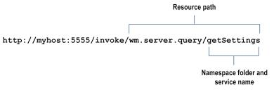
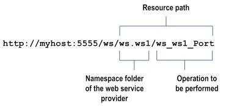
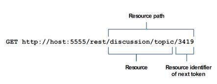
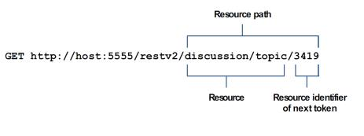

Creating an Enterprise Gateway Rule
Keep the following points in mind when creating an Enterprise Gateway rule:

Be careful to prioritize rules in the order in which you want them to be evaluated. This is particularly important in the case of denial rules because a violation of a denial rule causes
Enterprise Gateway Server to stop processing a request, sometimes before the entire rule has been evaluated.
You can create a rule that contains no filters. You might use such a rule to deny all requests of a certain request type, or to send alerts about requests that use a particular resource.
Enterprise Gateway rules are categorized into denial and alert rules. When you create a new rule, it is added to the end of the list of rules in the appropriate category on the
Security > Enterprise Gateway rules page.

To create an
Enterprise Gateway rule
1. Open Integration Server Administrator on the Integration Server acting as the Enterprise Gateway Server.
2. Go to Security > Enterprise Gateway rules.
3. Click Create Rule.
4. In the Rule Name box, enter a name for the rule.
Valid rule names:
Must be unique.
Must not be null.
Must not contain spaces.
Must not contain these special characters:
? ~ ` ! @ # $ % ^ & * ( ) - + = { } | [ ] \\ : \" ; ' < > , /
5. In the Description box, enter a brief description for the rule.
6. If you want to enable the rule immediately, select the Enable check box. Enterprise Gateway Server applies a rule to requests only if the rule is enabled. You can enable the rule later on the Enterprise Gateway Rules page.
7. From the Request Type list, select the type of request to which you want to apply the Enterprise Gateway rule. Select ALL if you want to apply this rule to all requests. Select SOAP, REST, or INVOKE to apply this rule to SOAP, REST, or INVOKE requests, respectively.
8. To filter a request based on the resource being requested, specify a string in the Resource Path box in the format folder_name/service_name. You can specify multiple paths, one to a line, and you can specify an asterisk (*) wildcard character. This box is available only if you selected a request type from the Request Type list.
Following are some examples of resource paths for INVOKE, web service, and REST requests.
Example INVOKE request  Example web service request  Example REST request - rest directive  Example REST request - restv2 directive 
9. In the Action box, select one of the following:
Select... | To... |
Deny Request and Alert | Deny the request if it violates the rule. Enterprise Gateway Server sends an alert based on the configured alert options. |
Alert | Allow the request and send an alert based on the configured alert options. |
10. In the Error Message box, enter a custom message that you want Enterprise Gateway Server to send to the client if a request violates an Enterprise Gateway deny rule. The server sends this message as a status message for an HTTP 403 status code, in the format “HTTP 403 custom error message.”
11. Under OAuth Filter, select the Require OAuth Credentials check box if you want Enterprise Gateway Server to check for an OAuth token in the authorization header of the request. Select the Enable check box to enable this filter now, or enable this filter later by editing the rule on the Edit Rule page.
12. Under Message Size Filter, in the Maximum Message Size box, enter the maximum size allowed for HTTP and HTTPS requests, in megabytes. If the request is larger than the size specified in this limit, the request will violate the rule and Enterprise Gateway Server will perform the configured action. Select the Enable check box to enable this filter now, or enable this filter later by editing the rule on the Edit Rule page.
13. Under Mobile Application Protection Filter, specify one or more conditions that describe requests based on the device type from which the request was sent and the version of mobile application that sent the request. If a request meets a condition, the rule is violated and Enterprise Gateway Server will perform the configured action. For example, you can specify that you will not allow requests from out-of-date versions of the ABC application sent from a ZZZ smart phone. Select the Enable check box to enable this filter now, or enable this filter later by editing the rule on the Edit Rule page.
14. Under SQL Injection Protection Filter, select one or both of the following:
Select... | To... |
Database-Specific SQL Injection Protection | Block incoming requests that contain patterns recognized as potential SQL injection attacks for specific databases. From the Database list, select the database against which specific parameters needs to be checked. Under Parameters, specify one or more GET or POST request parameters that could be present in the incoming requests. Parameters can contain only alphanumeric characters, dollar sign ($), and underscore (_). |
Standard SQL Injection Protection | Block XML or SOAP payload messages that contain quotation mark ('), number sign (#), or double hyphen (--) anywhere within the message. |
Note:
Even though you can select both the filters, selecting multiple options may increase the message processing time because each filter requires a separate inspection of the request message.
Select the Enable check box to enable this filter now, or enable this filter later by editing the rule on the Edit Rule page.
15. Under Antivirus Scan Filter, enter the following information if you want Enterprise Gateway Server to scan the incoming payload for viruses:
For this parameter... | Specify... |
Antivirus ICAP Engine Name | A name for the ICAP server. |
ICAP Host Name or IP Address | The host name or IP address of the machine on which the ICAP server is running. |
ICAP Port Number | The port number on which the ICAP server is listening. |
ICAP Service Name | The name of the service exposed by the ICAP server that you can use to scan your payload for viruses. |
Select the Enable check box to enable this filter now, or enable this filter later by editing the rule on the Edit Rule page.
16. Under Custom Filter, click the Browse button adjacent to the Invoke Service field if you want to invoke a service that is available on the Enterprise Gateway Server. From the Package Name list, select the package that contains the service that you want to invoke. Enterprise Gateway Server populates the Service Name list with the names of the services that have the pub.security.enterprisegateway:customFilterSpec specification as its signature in the selected package. Select the service that you want to invoke.
In the
Run As User box, click

to select the user name you want
Enterprise Gateway Server to use to run the service. The default is Administrator.
You can select a user from the local or central directory. Enterprise Gateway Server runs the service as if the user you specify is the authenticated user that invoked the service. If the service is governed by an ACL, be sure to specify a user that is allowed to invoke the service.
Clear the Clone the Payload check box so that Integration Server does not duplicate the incoming payload and process only the header information in the request. When you select the check box, Integration Server duplicates the payload and processes the complete request. By default, the check box is selected.
Important:
If the custom filter is enabled, the Enterprise Gateway rule that contains the custom filter must be a denial rule. Enterprise Gateway Server automatically converts an alert rule into a denial rule when you enable the custom filter.
Select the Enable check box to enable this filter now, or enable this filter later by editing the rule on the Edit Rule page.
17. Click Save Changes.
Enterprise Gateway Server displays the rule on the Enterprise Gateway Rules page under Denial Rules or Alert Rules depending on the action you selected when you created the rule.